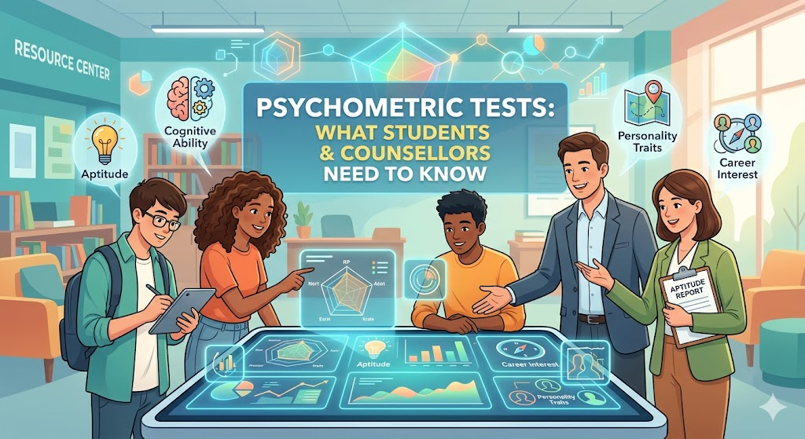

Psychometric Tests: What Students and Counsellors Need to Know

"What Is Psychometric Testing?" — Unifrog Webinar (pre-recorded) | Topics: Nestlé, Rolls-Royce, verbal reasoning, job simulation tests, and how to perform well in assessments.
Psychometric assessments are becoming a standard part of the hiring and internship application process at major global companies. Yet for most high school students — and many counsellors — they remain unfamiliar territory. This post summarises the key takeaways from a Unifrog webinar on psychometric testing, with practical action points for both students and counsellors.
What Are Psychometric Tests?
Psychometric tests are structured assessments used by employers to evaluate candidates beyond their academic results. They typically measure:
- Cognitive abilities — verbal reasoning, numerical reasoning, logical thinking
- Job simulation — how a candidate responds to realistic workplace scenarios
- Personality and work style — how a person approaches problems, teams, and pressure
The core purpose is simple: companies want to understand what a candidate is good at, what motivates them, and how they are likely to behave in a real work environment. Academic grades tell part of that story — psychometric data fills in the rest.
Why This Matters for Our Students
Companies like Nestlé and Rolls-Royce run internship and apprenticeship programmes that are open to Grade 12 school leavers and undergraduate students. These are not entry-level jobs found through informal referrals — they are structured, competitive programmes with formal application processes that include psychometric assessments.
Nestlé's flagship internship programme offers one-month projects in Sales, Marketing, Supply Chain, and IT. Applicants register via the Talent Games portal and complete a gamified psychometric assessment. For many roles, the minimum requirement is 104 UCAS points — making A Level performance directly relevant. Students who perform well in self-knowledge tools like Unifrog's quizzes are better positioned to succeed in these assessments.
These opportunities matter because they give students early, real-world experience with globally recognised brands — and because they demonstrate to universities that a student is proactively preparing for the workplace, not just studying for exams.
What the Webinar Highlighted: Key Takeaways
1. Self-Knowledge Is the Foundation
Before a student can perform well in a psychometric test, they need to have a clear sense of who they are. The webinar emphasised that companies are looking for candidates who:
- Know what they are genuinely good at
- Understand what motivates them
- Can clearly communicate and project their strengths
This is not something students can develop the night before an assessment. It is built over months through reflection, experience, and feedback — which is exactly what tools like Unifrog's quizzes and skills tests are designed to support.
2. Practice Makes a Measurable Difference
Verbal reasoning and job simulation tests are skills — and like any skill, they improve with deliberate practice. Students who regularly engage with Unifrog's quizzes, complete reflection tasks, and take on new challenges outside their comfort zone are building the exact cognitive habits that psychometric tests reward.
"Start saying yes to new opportunities and build on your skills and expertise. It is important to build upon knowledge, know more about oneself, and know how to project it out — for better job prospects."
3. The Link Between Quizzes and Real-World Assessments
There is a direct link between the self-assessment activities available in Unifrog and the psychometric assessments used by employers. Students who complete Unifrog's quizzes are not just filling in a school requirement — they are practising the kind of reflective, structured thinking that modern employers actively seek and assess.
Action Items for Counsellors
The webinar concluded with two specific resources in the Unifrog Know-how library that are worth assigning to Grade 12 students as structured preparation:
| Resource | Purpose |
|---|---|
| An Introduction to Psychometric Tests | Explains what psychometric tests are, the different types, and how to approach them calmly and confidently |
| A Guide to Assessment Days | Prepares students for multi-stage assessment centres used by companies like Nestlé and Rolls-Royce — often the final stage before an offer |
Both guides are available directly in the Unifrog Know-how library and can be assigned to students via the platform. I recommend making these part of the Grade 12 counselling programme alongside university application support — the workplace readiness dimension is just as important as the academic one.
Conclusion
Psychometric tests are not a threat to students — they are an opportunity. For students who have spent time understanding themselves, building their skills, and engaging genuinely with their learning, these assessments are a chance to stand out on dimensions that grades alone cannot capture.
As counsellors, our role is to ensure students know these assessments exist, understand what they measure, and have access to the tools and guidance to prepare for them well in advance.
"Know yourself. Build yourself. Then show yourself — clearly and confidently."
Reference: "What Is Psychometric Testing?" | Unifrog Webinar (pre-recorded)